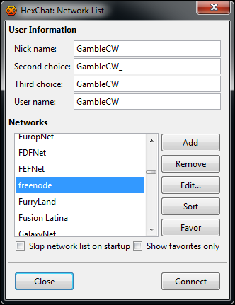
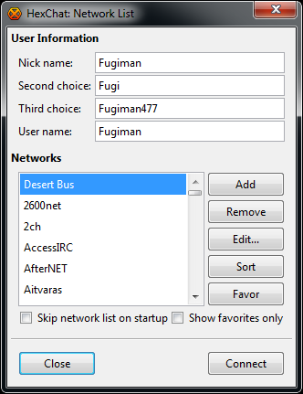
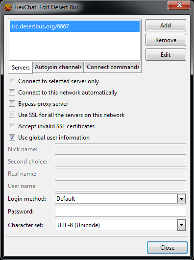
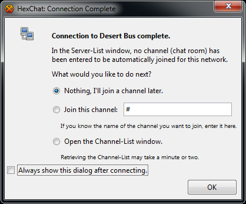
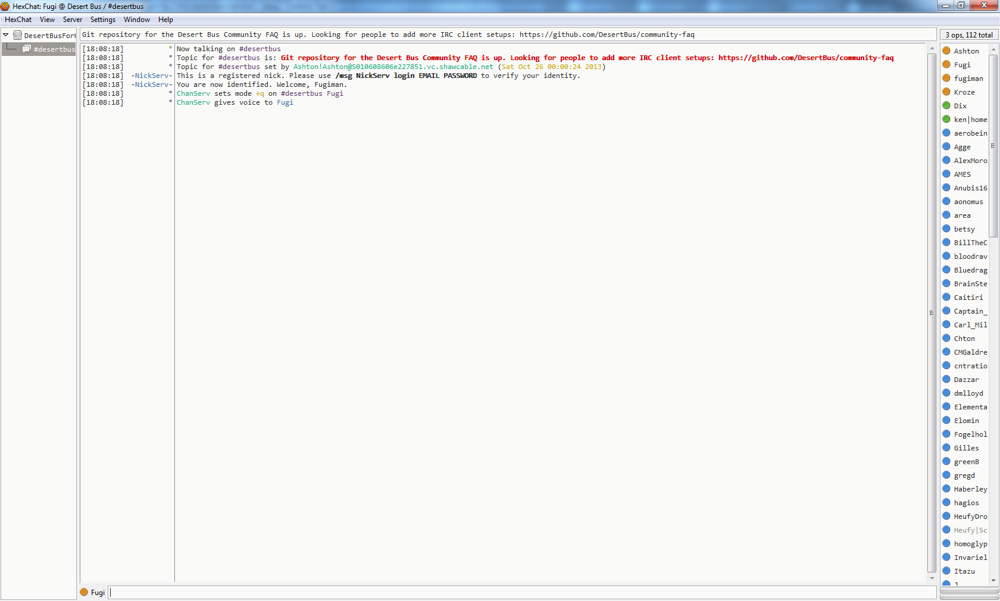

Using HexChat to Access the Desert Bus Chat
HexChat is a cross-platform client that is simple to use. You can download it at HexChat.github.io.
In this guide, we'll assume you've installed the latest version of HexChat (2.9.6.1) and selected the "Normal Installation" bundle, though older versions or different bundles should work as well.
- Initial Setup
- Network Setup
- Automatically Connect On Startup
- Automatically Identify To Your Donor Account
- Finishing Up
- Hiding Joins And Parts In #DesertBus
Setting Up HexChat For The First Time
When running HexChat for the first time, you should be presented a screen like the one above. There is a lot of important information on this screen, so let's break it down.
Nick name: This is the name other users will see you as. By default it is your computer's user name, but you can set it to whatever you like that doesn't have any spaces.
Second choice: If somebody has already claimed your nick name, this will be used instead. The same rules apply as the nick name.
Third choice: I think you get it by now.
User name: While this is meaningful to IRC servers, it doesn't really matter that much. You can just set it to the same thing as your nick name and not worry about it.
Networks: This is a list of every IRC network HexChat knows about. You can select one from this list and press Connect to join the network and start chatting. However, HexChat doesn't know about the Desert Bus network yet, so we have to set that up first.
Setting Up The Desert Bus Network
On the network list screen (pictured above), press Add to create a new network. This will add an entry to the network list with the default name of New Network, and give you an option to edit it. Enter a desired name, for instance "Desert Bus", and press enter to save your changes. If you accidentally click elsewhere or press enter and want to edit the network name again, double click the entry. By now you should see the following.
Now, with your newly created network selected, press Edit to see the following screen.

All you need to do is double click "newserver/6667" and change it to "irc.desertbus.org/6667". For extra security, you can set it to "irc.desertbus.org/+6697" instead.
Automatically Connecting To Desert Bus On Startup (Optional)
To save yourself a few seconds you can configure HexChat to automatically connect to Desert Bus every time it starts up. On the network edit screen, check the Connect to this network automatically checkbox as shown.

You can also stop the network list from showing on startup by checking the Skip network list on startup checkbox on the network list screen as shown.

Automatically Identify To Your Donor Account (Optional)
If you have a Desert Bus Donor Account (and if you don't, get one) you can easily log in every time you connect to the network. On the network edit screen enter:
Login method: "Sever Password (/PASS password)"
Password: "your_donor_account_email your_donor_account_password" (E.g. I'd set mine to "fugi@fugi.com my_password").

Finally Connecting To The Desert Bus Network
You're almost done! On the network edit screen press Close, ensure "Desert Bus" is selected on the network list screen, and press Connect. HexChat will connect to the server, but warn you that you haven't chosen any channels.

This is not a problem! By default, the server itself will put you in the #DesertBus channel, where all chatting happens. Just uncheck the Always show this dialog after connecting checkbox to get rid of this annoyance.
That's it, you're in. Welcome to the party!
Hiding Joins And Parts In #DesertBus
With so many people in the chat there are bound to be quite a few joining and leaving constantly. To remove the clutter of these messages, right click #desertbus on the left side of your screen. Hover over Settings to bring up an additional menu, then click on Hide Join/Part Messages.

This will hide the messages for the current session. To hide join and part messages for future sessions, select Settings in the menu bar.

In the Settings window, select the General tab underneath Chatting. On this screen, check the Hide join and part messages checkbox.